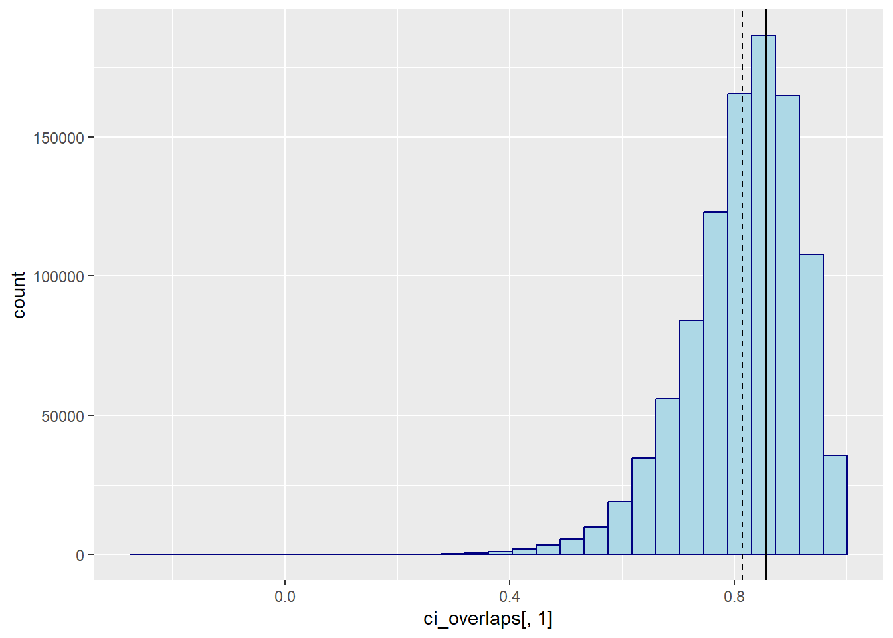

ci_overlap <- function(obs_l, obs_u, syn_l, syn_u) {
obs_ol <- (min(obs_u, syn_u) - max(obs_l, syn_l)) / (obs_u - obs_l)
syn_ol <- (min(obs_u, syn_u) - max(obs_l, syn_l)) / (syn_u - syn_l)
(obs_ol + syn_ol) / 2
}
set.seed(123)
nsim <- 1000000
n <- 1000
sim_ci <- function(n) {
obs <- rnorm(n)
syn <- rnorm(n, mean(obs), sd(obs))
ci_obs <- confint(lm(obs ~ 1))
ci_syn <- confint(lm(syn ~ 1))
cio <- ci_overlap(
ci_obs[1, 1],
ci_obs[1, 2],
ci_syn[1, 1],
ci_syn[1, 2]
)
c(cio = cio,
muo = mean(obs),
mus = mean(syn),
sdo = sd(obs),
sds = sd(syn),
lo = ci_obs[1,1],
uo = ci_obs[1,2],
ls = ci_syn[1,1],
us = ci_syn[1,2])
}
cl <- parallel::makeCluster(18)
parallel::clusterExport(cl, list("sim_ci", "n", "ci_overlap"))
#pbapply::pboptions(type = "none")
pbapply::pboptions(type = "timer")
ci_overlaps <- pbapply::pbreplicate(nsim, sim_ci(n), cl = cl) |>
matrix(9) |>
t()
parallel::stopCluster(cl)What is the expected confidence interval overlap under a correct synthesis model?
Consider two CI’s, one for the observed data and one for the synthetic data. We can consider the observed data CI fixed, as the synthetic data is always generated with the parameters of the observed data. Accordingly, the expected CI of the observed data is equal to \(0 \pm 1.96 * s / \sqrt{n}\). The expected CI of the synthetic data is pretty similar, but typically not the same. As the variance of the synthetic data is on average the same as the variance of the observed data, the width of the CI obtained on the synthetic data is on average equal to the width of the CI obtained on the observed data. However, the CI obtained on the synthetic data is typically one average absolute deviation away from the CI obtained on the observed data. Accordingly, we can fill in the following numbers
s <- 1 / sqrt(n) # standard error of the mean in the observed and synthetic data
z <- qt(0.975, df = n-1) # quantiles of t distribution with df = n - 1
d <- (2 * s) / (sqrt(2 * pi)) # average absolute deviation of synthetic data estimateThe CI overlap equals: \[\frac{\min(u_o, u_s) - \max(lo, ls)}{2(u_o - l_o)} + \frac{\min(u_o, u_s) - max(l_o, l_s)}{2(us - ls)},\] where \(u_o\) and \(l_o\) are the upper and lower bounds of the observed data CI, and \(u_s\) and \(l_s\) are the upper and lower bounds of the synthetic data CI.
Then, the expectations of the upper and lower bounds of the observed data CI are equal to \(0 \pm 1.96s\).
lo <- -z * s
uo <- z * sThen, with probability 0.5, the synthetic data estimate is higher than the observed data estimate. If this is the case, the expected deviation equals \(\frac{2s}{\sqrt{2 \pi}}\). By symmetry, the same holds for the lower bound.
ls <- d + lo
us <- d + uoLet us fill in the formula of the CI overlap with these numbers.
((min(uo, us) - max(lo, ls)) / (uo - lo) + ((min(uo, us) - max(lo, ls)) / (us - ls))) / 2[1] 0.7967009mean(ci_overlaps[,1])[1] 0.7966555library(ggplot2)
ggplot() +
geom_histogram(aes(x = ci_overlaps[,1]), fill = "lightblue", col = "navy") +
geom_vline(xintercept = ((min(uo, us) - max(lo, ls)) / (uo - lo) +
((min(uo, us) - max(lo, ls)) / (us - ls))) / 2) +
geom_vline(xintercept = mean(ci_overlaps[,1]),
linetype = 2,
show.legend = TRUE)`stat_bin()` using `bins = 30`. Pick better value with `binwidth`.The sample standard deviation is a biased estimator of the population standard deviation
However, the sample standard deviation is a biased estimator of the population standard deviation. If we would repeat the procedure with a smaller sample size, we would getting a higher expected confidence interval than we would see empirically.
n <- 5
cl <- parallel::makeCluster(18)
parallel::clusterExport(cl, list("sim_ci", "n", "ci_overlap"))
#pbapply::pboptions(type = "none")
pbapply::pboptions(type = "timer")
ci_overlaps <- pbapply::pbreplicate(nsim, sim_ci(n), cl = cl) |>
matrix(9) |>
t()
parallel::stopCluster(cl)
s <- 1 / sqrt(n) # standard error of the mean in the observed and synthetic data
z <- qt(0.975, df = n-1) # quantiles of t distribution with df = n - 1
d <- (2 * s) / (sqrt(2 * pi)) # average absolute deviation of synthetic data estimate
lo <- -z * s
uo <- z * s
ls <- d + lo
us <- d + uo
((min(uo, us) - max(lo, ls)) / (uo - lo) + ((min(uo, us) - max(lo, ls)) / (us - ls))) / 2[1] 0.8563118mean(ci_overlaps[,1])[1] 0.8138431library(ggplot2)
ggplot() +
geom_histogram(aes(x = ci_overlaps[,1]), fill = "lightblue", col = "navy") +
geom_vline(xintercept = ((min(uo, us) - max(lo, ls)) / (uo - lo) +
((min(uo, us) - max(lo, ls)) / (us - ls))) / 2) +
geom_vline(xintercept = mean(ci_overlaps[,1]),
linetype = 2,
show.legend = TRUE)`stat_bin()` using `bins = 30`. Pick better value with `binwidth`.
The analytical and empirical CI overlap are still quite close, but different nonetheless. This is, at least partly, due to the fact that the used standard deviations do not reflect the true standard deviations anymore. That is, under a normal model, the sample standard deviation \[ s = \sqrt{\frac{1}{n-1} \sum_{i=1}^n (x_i - \bar{x})^2}, \] is a biased estimator of the population standard deviation \(\sigma\) by a factor \[a = \sqrt{\frac{2}{n-1}} \frac{\Gamma(\frac{n}{2})}{\Gamma(\frac{n-1}{2})}.\] Note, indeed, that the estimated standard deviations are smaller than 1 in the simulations, by a factor of \(a\) and \(a^2\).
a <- sqrt(2 / (n - 1)) * gamma(n / 2) / gamma((n - 1) / 2)
colMeans(ci_overlaps[,4:5])[1] 0.9396667 0.8835604c(a, a^2)[1] 0.9399856 0.8835729Since R also uses this biased estimate, the synthetic data is also not generated according to the true model. We can correct for this bias by setting the standard deviation of the synthetic data to sd(obs)/a, or by adjusting the later estimates of the analytical confidence intervals. However, as \(n\) grows large, the gamma function cannot be estimated anymore, and we can approximate \(a\) by \(\tilde{a} = \frac{n-1.5}{n-1}\). We do this for \(n > 100\). Also note that for increasing \(n\), the bias decreases, and thus becomes less relevant anyway.
a <- ifelse(n > 100,
(n - 1.5) / (n - 1),
sqrt(2 / (n - 1)) * gamma(n / 2) / gamma((n - 1) / 2))
cl <- parallel::makeCluster(18)
parallel::clusterExport(cl, list("sim_ci", "n", "ci_overlap", "a"))
#pbapply::pboptions(type = "none")
pbapply::pboptions(type = "timer")
ci_overlaps <- pbapply::pbreplicate(nsim, sim_ci(n), cl = cl) |>
matrix(9) |>
t()
parallel::stopCluster(cl)
s <- 1 / sqrt(n) # standard error of the mean in the observed and synthetic data
z <- qt(0.975, df = n-1) # quantiles of t distribution with df = n - 1
d <- (2 * s * a) / (sqrt(2 * pi)) # average absolute deviation of synthetic data estimate
lo <- -z * s * a
uo <- z * s * a
ls <- d + (-z * s * a^2)
us <- d + (z * s * a^2)
((min(uo, us) - max(lo, ls)) / (uo - lo) + ((min(uo, us) - max(lo, ls)) / (us - ls))) / 2[1] 0.8526828mean(ci_overlaps[,1])[1] 0.8137271library(ggplot2)
ggplot() +
geom_histogram(aes(x = ci_overlaps[,1]), fill = "lightblue", col = "navy") +
geom_vline(xintercept = ((min(uo, us) - max(lo, ls)) / (uo - lo) +
((min(uo, us) - max(lo, ls)) / (us - ls))) / 2) +
geom_vline(xintercept = mean(ci_overlaps[,1]),
linetype = 2)`stat_bin()` using `bins = 30`. Pick better value with `binwidth`.Alternatively, we could multiply sd(obs) with the factor a to get a correct estimate of the observed data standard deviation there, and remove the factor a from d, and also remove one factor a from ls and us.
Hence, there is apparently something else that I am overseeing here. The next step would be to specify a probability function with respect to the confidence interval overlap. Particularly, for every deviation from the population mean, we can calculate how likely that deviation is, and how it would affect the confidence interval overlap. We can then integrate over all possible deviations to get the probability of the confidence interval overlap. We’ll leave this for future work. Although some preliminary functionality (that still does not give the desired results) is shown below.
fx1 <- \(x, s, n) {
a <- if (n > 100) (n-1.5)/(n-1) else sqrt(2/(n-1))*gamma(n/2)/gamma((n-1)/2)
uo <- qt(0.975, n-1) * s * a
ciol <- 2*uo
us <- qt(0.975, n-1) * s * a^2
cisl <- 2*us
((uo - (-us) - x)/ciol + ((uo - (-us) - x)/cisl))/2 * dnorm(x, 0, s*a)
}
n <- c(5, 10, 1000)
2 * sapply(n, \(x) integrate(fx1, 0, Inf, s = 1/sqrt(x), n = x)$value)[1] 0.8526828 0.8213587 0.7966500fx2 <- \(x, s, n) {
a <- if (n > 100) (n-1.5)/(n-1) else sqrt(2/(n-1))*gamma(n/2)/gamma((n-1)/2)
uo <- qt(0.975, n-1) * s * a
ciol <- 2*uo
us <- qt(0.975, n-1) * s * a^2
cisl <- 2*us
cio <- (pmin(uo, us + x) - pmax(-uo, -us + x))/ciol +
(pmin(uo, us + x) - pmax(-uo, -us + x))/cisl
cio/2 * dnorm(x, 0, s*a)
}
sapply(n, \(x) integrate(fx2, -Inf, Inf, s = 1/sqrt(x), n = x)$value)[1] 0.8506289 0.8210198 0.7966500Then, another solution could be to also integrate over sigma, instead of only over the deviations from the mean, but I’m not sure whether this will work.